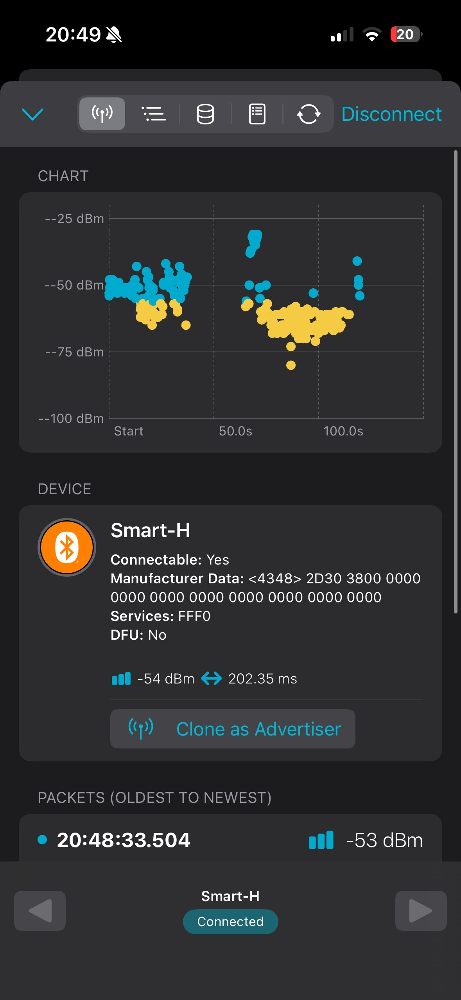
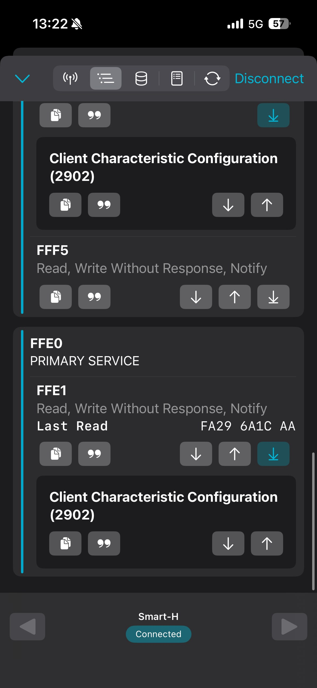
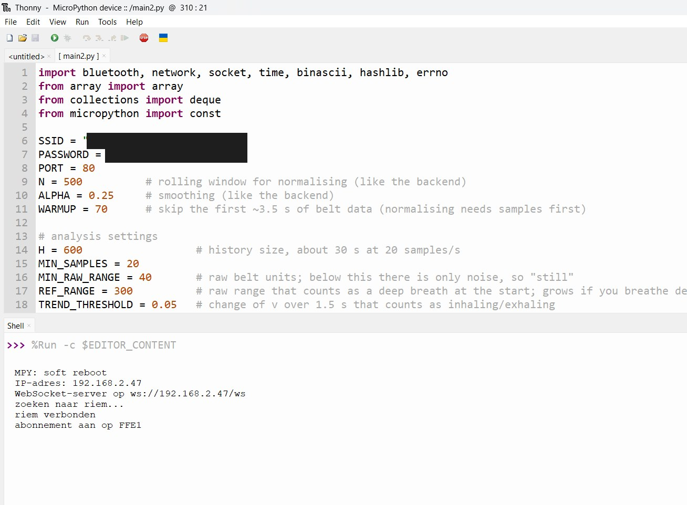

2. Riem uitlezen met de ESP32 (Bluetooth)
Ik wilde de ademriem rechtstreeks met de ESP32 uitlezen, zonder laptop of telefoon ertussen.
vr 30 oktober t/m di 3 november 2026
Waar ik begon
Dit werk begon eigenlijk al in Sprint 1, toen ik de riem met een dongle en een pc uitlas. Toen wist ik al een paar dingen over FFE1 en over het aanzetten van meldingen. Ik vroeg me ook af of de riem gewoon Bluetooth of Bluetooth Low Energy (BLE) gebruikt. In Sprint 2 ging ik er echt mee verder, vanaf vr 30 oktober, en op di 3 november werkte het helemaal.
Mijn onderzoeksvraag was hoe ik de riem direct met de ESP32 kan uitlezen. De riem heeft een HC-08 Bluetooth-module, dus de ESP32 moet verbinding maken met de riem en zich gedragen als “central”.
Wat ik niet snapte
Eerlijk gezegd begreep ik het Bluetooth-gedeelte in het begin niet. Ik wist dat de riem data stuurt, maar niet hoe de ESP32 die kon krijgen. In nRF Connect zag ik veel informatie over het apparaat, maar ik wist niet wat ik daarmee moest.
Hoe ik het ging begrijpen
Ik begon met de datasheet van de HC-08 en met de BoKSA-pagina Reading Datasheets. Daar leerde ik hoe een datasheet is opgebouwd en hoe ik er precies het nuttige uit haal. Dat was belangrijk, want zo vond ik in de datasheet de standaardnaam (HC-08) en de nummers FFE0 en FFE1.
Om de communicatie tussen het apparaat en de app beter te begrijpen, las ik twee lessen van de Nordic Academy, namelijk les 4 over seriële communicatie (UART) en les 3 over berichten printen en loggen. Met print kon ik zien wat er gebeurde, en daardoor snapte ik de logs van de communicatie beter.
De video How to make Skylanders NFC Cards! had ik vorig jaar al gezien. Hij ging over NFC-kaarten en liet me zien dat je met een tool de data van een chip kunt bekijken. Dat idee nam ik mee toen ik de riem met nRF Connect ging bekijken. Verder legde ik de Bluetooth-kant vooral uit aan Rio, wat voor ons allebei leerzaam was.
Wat ik zag in nRF Connect
In nRF Connect heet de riem “Smart-H”, niet “HC-08”. De chip is volgens de datasheet een HC-08. Ik weet niet zeker waarom de naam anders is. Mijn gedachte is dat het de naam van het hele apparaat is en niet alleen van de chip.
Het apparaat laat de service FFF0 zien. Als je verbindt, zie je de service FFE0 met daarin FFE1. FFE1 kan lezen, schrijven zonder antwoord en meldingen sturen (notify). Bij “Last Read” staat FA29 6A1C AA.
Dat is één pakket van 5 bytes, namelijk FA (begin), 29 en 6A (de ruwe waarde), 1C (frequentie) en AA (einde). De ruwe waarde is hoog × 256 + laag, dus 0x29 × 256 + 0x6A = 10602.


Stappen
- Ik keek met de app nRF Connect op mijn telefoon naar de riem, voordat ik code schreef.
- De data komt binnen als meldingen (notificaties) op de characteristic FFE1. De handle zoek ik op door de characteristics te ontdekken.
- Om meldingen aan te zetten schrijf ik 0x0001 naar de descriptor direct na de value handle (handle + 1). Zo “abonneer” ik me op FFE1.
- Elke melding is een pakket van 5 bytes, namelijk 0xFA, hoge byte, lage byte, frequentie en 0xAA. De ruwe waarde is hoog × 256 + laag.
- In MicroPython zoek ik de riem, maak ik verbinding, ontdek ik de characteristics, abonneer ik op FFE1 en lees ik de pakketten uit.

Wat de datasheet wel en niet zegt
In de datasheet van de HC-08 staat de standaardnaam “HC-08”, de zoek-UUID FFF0 voor de master, de service FFE0 en de characteristic FFE1 met de eigenschappen read, notify en write without response. Na de verbinding werkt de module in transparante seriële modus (pagina 4, 6, 12 en 13).
Het pakket van 5 bytes (0xFA … 0xAA) staat niet in de datasheet. Dat komt van de riem zelf. Ik zag de pakketten eerder in de terminal van de breathing-app en later in nRF Connect.
Probleem. Het script stopte met een KeyError toen het de handle van FFE1 wilde gebruiken.
Oplossing. Ik zoek FFE1 nu door te controleren of “ffe1” in de UUID zit, en het script controleert of de handle bestaat voordat het zich abonneert. Anders meldt het “FFE1 niet gevonden” en probeert het opnieuw.
Wat ik hieruit leer
- Ik testte eerst met een app op mijn telefoon voordat ik code schreef. Zo zag ik wat de riem echt stuurt, in plaats van te raden.
- Ik leerde hoe Bluetooth met apparaten praat en wat de nummers FFE0 en FFE1 zijn.
- De riem gebruikt BLE, want nRF Connect laat zijn services en characteristics zien. Dat was in Sprint 1 nog een vraag.
- Ik leerde de snelheid van de Bluetooth-meldingen herkennen, ongeveer 20 per seconde.
- Een datasheet lezen is een vaardigheid. Weten waar je moet zoeken scheelt veel tijd.
Bronnen
- HC-08 datasheet. https://www.hc01.com/downloads/HC-08A%20version%20english%20datasheet.pdf
- BoKSA, Reading Datasheets. https://boksa.hbo-ict-hva.nl/profiles/embedded-robotica-engineer/knowledge/prototyping/reading-datasheets/
- Nordic Academy, les 4, Serial communication (UART). https://academy.nordicsemi.com/courses/nrf-connect-sdk-fundamentals/lessons/lesson-4-serial-communication-uart/
- Nordic Academy, les 3, Printing messages to console and logging. https://academy.nordicsemi.com/courses/nrf-connect-sdk-fundamentals/lessons/lesson-3-printing-messages-to-console-and-logging/
- MicroPython, bluetooth. https://docs.micropython.org/en/latest/library/bluetooth.html
- Inspiratie. “How to make Skylanders NFC Cards!” (YouTube). https://www.youtube.com/watch?v=6GGM4oMyJdI